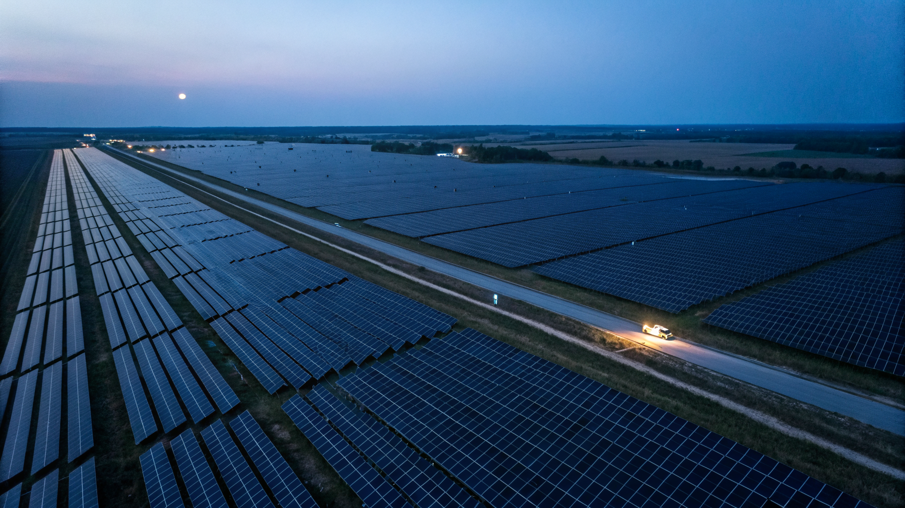
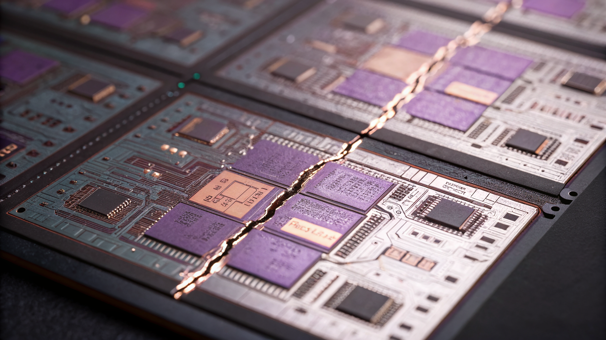
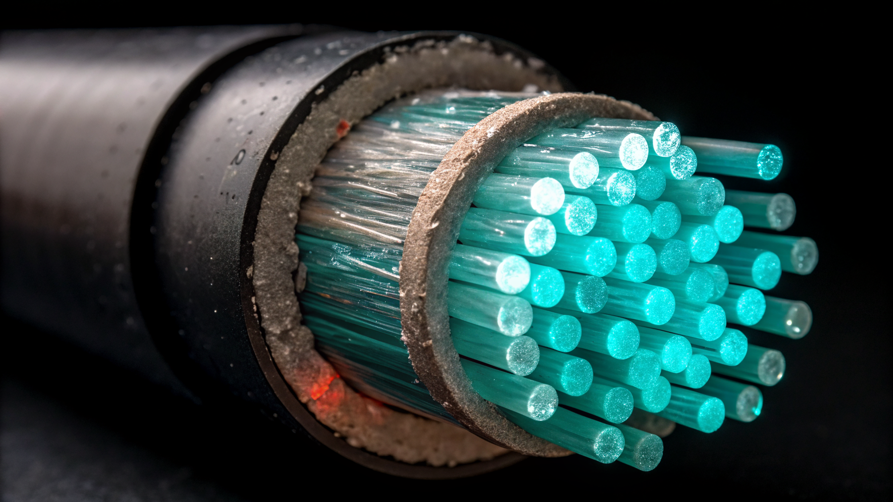
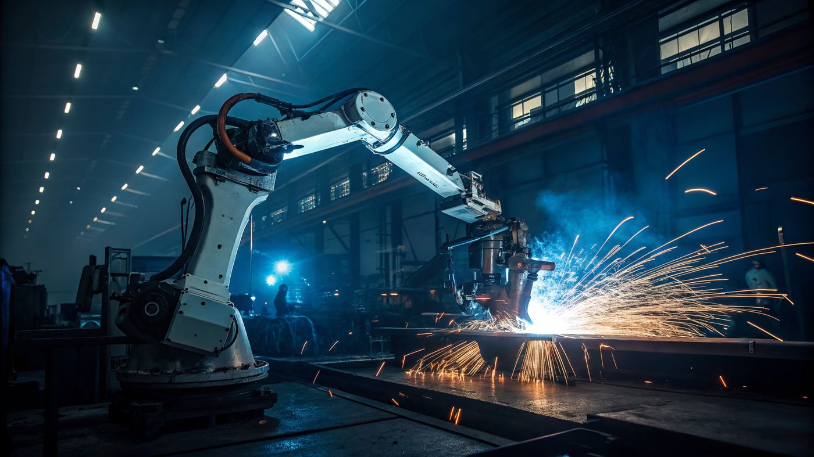
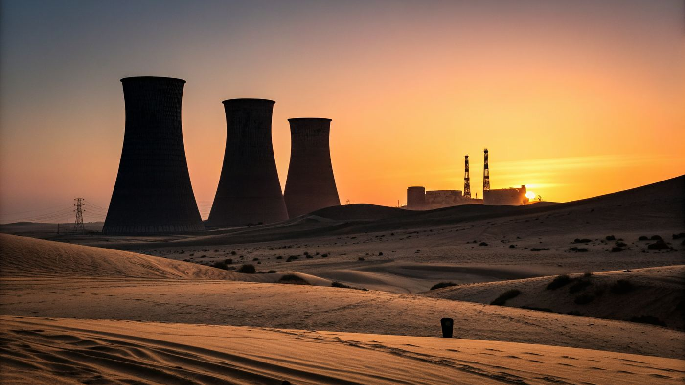

In the spring of 1973, a dozen men in Riyadh made a decision that reshaped the global order for fifty years. The Arab oil embargo demonstrated, with devastating simplicity, that whoever controlled hydrocarbons controlled the world. Within months, the price of crude quadrupled. Western economies buckled. A generation of foreign policy was born.
Today, as American cruise missiles arc over the Strait of Hormuz and Iranian oil infrastructure burns, we are witnessing — in real time — the final convulsion of that order. Not because oil doesn't matter. It still does, desperately. But because the war in Iran is revealing, with brutal clarity, what a growing body of evidence has been whispering for a decade: the age of the petrostate is ending. And what replaces it will be determined not by who sits on the largest reserves of crude, but by who can forge a chain from clean energy to compute to intelligence to productivity — and keep every link intact.
The question is no longer who has the oil. It's who can connect the chain.
The Compound Problem
I built what I call the 21st Century Resilience Index — a data-driven assessment of 85 nations across nine dimensions, designed to answer a deceptively simple question: who is structurally positioned to thrive in the century ahead?
The answer is uncomfortable. Not because it reveals a clear winner — it doesn't — but because it reveals that almost no one is ready.
The index measures three axes. Transition Readiness: do you have the technology? Clean energy share, clean tech manufacturing, compute and AI infrastructure, economic complexity. Power to Execute: can you actually build it? Execution capacity, capital mobilization, transition velocity. Compound Exposure: what are you up against? Climate vulnerability and resource and material security — including, critically, access to the lithium, cobalt, rare earths, and copper that the electrostate demands as hungrily as the petrostate demanded oil.
Put simply, the transition from fossil fuels to electrified infrastructure is not an energy problem. It is a compound capability problem. You need the technology, the money, the governance to deploy it, the materials to build it, and the velocity to do it all before climate exposure makes it moot. No single advantage is sufficient. And almost no one has all of them.
Only about eight to twelve countries are structurally positioned to lead: the Nordics, Switzerland, Singapore, South Korea, Japan, Germany, China, and arguably France, the Netherlands, and Australia. Below this top tier, the drop-off is steep — and it is getting steeper.
Cheap Electrons, Cheap Intelligence
But the compound problem, as urgent as it is, understates the prize.
Here is the thesis the index forced me to confront: the electrostate transition is not ultimately about swapping one fuel source for another. It is about a causal chain — one that, if completed, produces a civilizational dividend so large it dwarfs anything the petrostate era delivered.
The Intelligence Chain
Cheap Clean Energy
Cheap Compute
Abundant AI
Productivity Transformation
Healthcare. Manufacturing. Governance. Agriculture. Services. Finance. Education. Scientific research. All of it, transformed by cheap intelligence the way the 20th century was transformed by cheap oil.
This is not speculation. The economics are already visible. Training a frontier AI model costs tens of millions of dollars, and the majority of that cost is energy — powering the GPUs that do the work. Inference, the ongoing cost of using these models once trained, is even more energy-intensive at scale. Every dollar shaved off the price of a kilowatt-hour compounds across billions of queries, billions of decisions, billions of automated tasks. Cheap electrons are the substrate. Cheap compute is the mechanism. Cheap intelligence is the output.
I call this the Electrostate Dividend — and I measure it as the geometric mean of four chain dimensions: clean energy production, clean technology manufacturing, compute and AI infrastructure, and economic complexity. The geometric mean is deliberate. It is ruthless. A single zero in any dimension collapses the entire score, because a single broken link in the chain collapses the entire dividend.
These are not intuitive results. The US has more hyperscale data center capacity than any nation on earth. Singapore is one of the most technologically sophisticated city-states in history. But the geometric mean is unforgiving. A broken chain is a broken chain.
Five Countries, Five Chains

Chain Score
0
China
The only country on earth where the chain runs unbroken. It added 278 GW of solar in 2024 — more than the rest of the world combined — and manufactures 80% of global solar panels, 83% of batteries, and 70% of electric vehicles. Its compute infrastructure is scaling despite US export controls. Its economic complexity is deep enough to absorb AI across every industrial sector.
Execution capacity of 81, transition velocity of +62, capital mobilization of 88. China understood that completeness beats excellence. A chain with no zeroes beats a chain with one hundred and one zero. The blind spots are real: 19.7% clean energy (coal remains the backbone), climate exposure of 66, and a mineral refining monopoly built on extraction dependency it doesn't control. But the chain is connected. The dividend is flowing. And no other country is close.

Chain Score
0
United States
The most dramatic inversion in the dataset. 95 on compute and AI — half the world's hyperscale data center capacity, every frontier AI lab that matters, the undisputed leader in machine intelligence. And a chain score of eleven. Because the US manufactures almost no solar panels, almost no batteries, almost no EVs at scale. It is a net clean tech importer — the only country in the top tier of any dimension that produces none of the hardware the transition requires.
Execution capacity of 50. Transition velocity of +2 — near-stagnant, with infrastructure decay actively eroding renewable gains. The IRA is real. The CHIPS Act is real. Whether American political culture permits these investments to compound across administrations — or whether each president partially reverses the last — is the question on which the chain hangs. An eleven is not a death sentence. It is a diagnosis.

Chain Score
0
Singapore
The execution paradox. The highest execution capacity on earth — 92 — with the lowest chain score in the top tier. Singapore can build anything. It proved this by transforming from a fishing village to a world-class city-state in forty years, deploying Temasek and GIC's $1.1T with surgical precision. Its economic complexity (ECI 1.83) rivals Japan's. Its governance is without peer.
But clean energy share is 0.5% — a tropical island with no wind, no hydro, no hinterland — and the geometric mean is unforgiving. Singapore's strategy — import clean energy from Australia via undersea cable, build AI infrastructure on regional power purchase agreements, leverage institutional quality to attract the chain rather than build every link domestically — is the most sophisticated workaround any nation has attempted. Whether a workaround can substitute for a chain remains the open question.

Chain Score
0
Germany
The quiet contender. The only major Western economy that both designs and manufactures clean technology at scale — a clean tech score of 28, more than double the next European country. The fourth-highest economic complexity on earth (ECI 1.94). Significant compute. Decent execution capacity at 63.
Germany's problem is not a broken chain but a throttled one: the nuclear exit dropped clean energy to 24%, gas dependency on Russia created an energy crisis, and permitting for renewables remains slower than physics demands. Transition velocity of +20 is respectable but not fast enough. If Germany solves its energy input, its chain score could jump to 55-60, making it the only Western nation in China's tier. The Energiewende was the right instinct executed at the wrong speed.

Chain Score
0
UAE
The petrostate that understood the thesis before anyone else — and is building the chain from the hardest starting position. Execution capacity of 82 (Barakah nuclear in twelve years, cities from desert). Transition velocity of +28 (the fastest of any petrostate by a factor of three). Capital mobilization of 70 ($1.7T in deployable sovereign capital across ADIA, Mubadala, and ADQ).
The chain score of 7 reflects the starting position: near-zero clean tech manufacturing and limited economic complexity. But the trajectory is the story. The UAE is betting that sovereign capital and execution speed can forge the chain faster than the oil clock runs out. If any petrostate makes the transition, it will be the UAE. Not because it has the chain today — it does not — but because it has the execution capacity and capital velocity to build one. The rest of the Gulf is watching. Most of them are not building.
The Velocity Gap
The chain scores tell you who has connected the links. The velocity scores tell you who is moving — and who is rotting.
China's transition velocity is +62 — nearly double the next-highest country. The US is at +2. That gap is not a policy difference. It is a structural divergence. China is building the infrastructure to harvest cheap intelligence. The US is building the intelligence without the infrastructure to harvest it. As Francis Fukuyama argued in Political Order and Political Decay, institutional quality is not the same as institutional performance. America has the former. It has lost the latter.
The velocity gap makes the chain diagnosis dynamic. Germany at +20 is closing links. Japan at +18 is turning, slowly. The UAE at +28 is forging a chain from the hardest starting position. Canada at -2 is going backwards. And the US at +2, weighed down by a -12 infrastructure condition delta (ASCE grade C-, bridges failing, grid aging), is essentially stagnant — deploying renewables with one hand while the built environment crumbles with the other.
The Petrostate Clock
Which brings us back to the Strait of Hormuz.
The war in Iran has done what a thousand policy papers could not: it has made the petrostate vulnerability thesis visceral. The Houthi disruption of Red Sea shipping was a preview. Iranian retaliation against Gulf oil infrastructure is the main event. And the data underneath the headlines is merciless.
Qatar's Electrostate Dividend score is 3. Its material security score is 7.6 out of 100. It imports 90% of its food. It desalinates virtually all of its water. It has zero critical mineral reserves. Its clean energy share is 0.2%. The Qatar Investment Authority holds over $500B in assets. It has invested approximately zero in the chain that connects energy to intelligence to productivity. Five hundred billion dollars, and not a single link forged.
Kuwait is worse: material security 9.1, capital mobilization 22, transition velocity -12. That negative number means Kuwait is not merely stagnant — it is regressing. It is one of the wealthiest nations on earth per capita and it is moving backwards.
Saudi Arabia sits at 16.3 on material security, -8 on velocity, 0.8% clean energy. Vision 2030 is real — NEOM, the Red Sea Project, the PIF's $930B — but the execution capacity score of 55 tells the truth beneath the branding. Saudi Arabia can build prestige megaprojects. It has not demonstrated the ability to build the boring, essential infrastructure — transmission grids, rail networks, water systems, manufacturing supply chains — that the electrostate requires. You cannot leapfrog the chain. You have to build it.
The UAE is the sole exception, and the exception proves the rule. It scores 82 on execution capacity, +28 on transition velocity, 70 on capital mobilization. It built the Barakah nuclear plant in twelve years. It has $1.7T in deployable sovereign capital. If any petrostate forges the chain, it's the UAE. The rest are on a clock they can't buy their way off.
The Iran war accelerates this clock. Every missile strike on Kharg Island, every disrupted tanker in the strait, every insurance premium that spikes for Gulf shipping, makes the case for energy independence — for electrification — more urgent. The irony is exquisite: the war meant to protect oil infrastructure is accelerating the transition away from oil.
The Material Question
But here is where the optimists need to be honest. The electrostate is not fossil-fuel-free. It is different-fuel-dependent.
Every solar panel requires silicon and silver. Every battery requires lithium, cobalt, and nickel. Every wind turbine requires rare earth magnets. Every EV requires copper — about four times as much as a combustion engine vehicle. Every data center requires staggering quantities of water for cooling and rare metals for the chips inside. The intelligence chain demands more material inputs than the energy transition alone, because it adds the compute layer — the GPUs, the networking hardware, the cooling infrastructure — on top of the generation and manufacturing layers.
And these minerals are concentrated in ways that mirror — and in some cases exceed — the concentration of oil. The Democratic Republic of Congo produces 51% of the world's cobalt. Indonesia produces 24% of nickel. Chile holds 28% of global copper reserves. Australia leads in lithium. China refines between 60-80% of virtually every critical mineral on the periodic table.
Australia jumps to 84.5 on material security — food-secure, water-secure, and sitting on the largest lithium reserves on earth plus significant rare earths, cobalt, and copper. Japan drops to 24.1 — near-total mineral import dependency, the same structural vulnerability as a petrostate but for different inputs. South Korea at 25.3, Taiwan at 18.7 — the world's most sophisticated manufacturers, unable to source the materials for what they need to build. Their chains, like America's, have broken links. Different breaks. Same consequence.
As Joseph Tainter elaborated in The Collapse of Complex Societies, civilizations don't fail because they face challenges — they fail because they cannot maintain the complexity required to solve them. The intelligence chain is more complex than anything the petrostate era demanded. The countries that can manage this complexity will lead. The countries that cannot — regardless of their wealth, their military power, or their institutional heritage — will not.
What the Index Cannot See
The index measures structural position. It cannot measure political will. Japan has the highest manufacturing sophistication on earth and has not committed to the transition at the speed its capability allows. Germany has a dividend score of 44 that could be 60 if its energy transition hadn't stalled on gas dependency and nuclear phase-out. The index sees the capability. It cannot see the decision.
It cannot measure the compounding potential of scale. India at 10.3% clean energy looks mid-table. But India has 1.4 billion people, built the world's largest real-time payment system in eight years, and is adding renewable capacity at rates that will reshape global energy markets within a decade. If India connects even a partial chain — cheap solar to distributed compute to AI-augmented services for a billion people — the productivity implications dwarf anything a nation of five or fifty million could achieve. The index sees the snapshot. It cannot see the mass.
And it cannot model the single points of failure that could break everything. Taiwan's TSMC produces 90% of advanced semiconductors. ASML in the Netherlands is the sole supplier of extreme ultraviolet lithography machines. A single military incident in the Taiwan Strait doesn't just disrupt chip supply — it breaks the compute link of the intelligence chain for every country on earth. The chain is only as strong as its weakest link, and some links are shared across all nations simultaneously.
The Iran war is a reminder that we are navigating the space between two worlds — the petrostate order that is dying and the electrostate order that has yet to be born. Karl Polanyi called such periods a Great Transformation: a time that "destroys old coping mechanisms and old safety nets, and creates new demands before new coping mechanisms are developed." We are in that space now. It is exciting, it is terrifying, and it will be, as the meme goes, a time of monsters.
Any diplomat will tell you the rules-based order is adapting. Give them a drink and they'll admit it's fracturing. The Iran war, the Red Sea blockade, the semiconductor standoff in the Taiwan Strait — these are not aberrations. They are the system reconfiguring itself around a new set of critical resources, a new hierarchy of capability, and a new prize: the Electrostate Dividend.
A nation with the world's best AI and no energy transition is a brain in a jar. A nation with cheap solar and no compute is a powerplant with nothing to power. A nation that manufactures everything but generates no intelligence is a factory running on yesterday's instructions.
China: 58. Germany: 44. South Korea: 36. Denmark: 36. The United States of America: 11. There are no adults in the room and no one is coming to save us. The only question is whether we can forge the chain fast enough to cross the gap between the world that is dying and the world that is struggling to be born.
The 21st century belongs to whoever connects the chain.